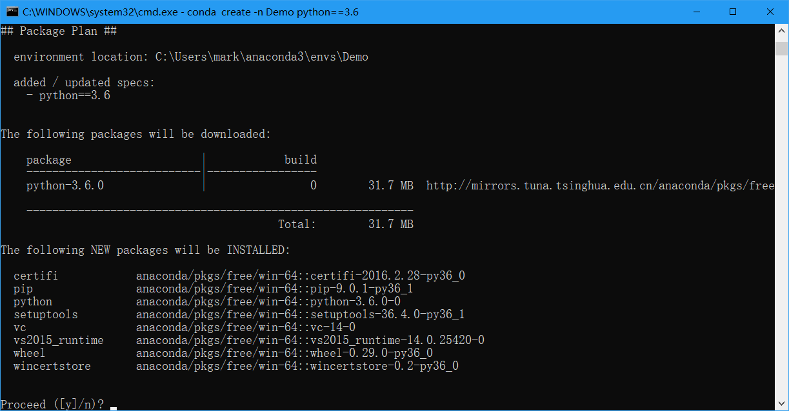
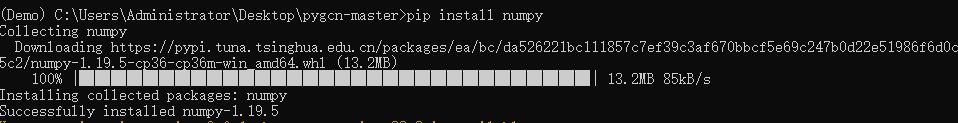

神经网络相关文档
2022/10
一、配置
1. anaconda
首先下载anaconda。因为不同的项目需要不同的环境，所以我们需要使用anaconda管理python环境。具体安装过程可以参考教程。
安装完毕后使用win+R快捷键并输入cmd打开命令行，在命令行中输入conda -V查看当前anaconda版本号，如果安装成功则出现如下：

如果出现" conda不是内部或外部命令，也不是可运行的程序或批处理文件。 "则表示环境变量未配置，需要手动配置环境变量或重新安装程序。手动配置环境变量可以参考教程。
2. PyCharm
使用PyCharm作为编译器。打开链接下载Community版本，如下图红框(若已申请学校邮箱可以免费使用Professional版本)，具体安装过程可以参考链接。
pycharm默认为英文界面，若需要更改为中文可以参考链接（使用第一个方法即可）

3.设置镜像源
配置conda镜像源
使用win+R快捷键并输入cmd打开命令行，在命令行中输入以下代码配置conda源，可以参考链接
conda config --add channels https://mirrors.tuna.tsinghua.edu.cn/anaconda/pkgs/free/win-64/
conda config --add channels https://mirrors.tuna.tsinghua.edu.cn/anaconda/pkgs/main/win-64/
conda config --add channels https://mirrors.tuna.tsinghua.edu.cn/anaconda/cloud/pytorch/
conda config --set show_channel_urls yes
配置pip镜像源
在当前对用户目录下（C:\Users\xx\pip，xx 表示当前使用对用户，比如张三）创建一个 pip.ini，如下图。

图中我的用户名为mark（默认用户名为Administrator），pip文件夹需要自行创建。之后打开pip文件夹,新建pip.ini文件，并通过记事本或其他软件打开，并输入以下内容。其他可以参考链接
[global]
index-url = https://pypi.tuna.tsinghua.edu.cn/simple
[install]
trusted-host=pypi.tuna.tsinghua.edu.cn
最后保存即可。
4. 配置环境
因为不同的项目所需的环境不尽相同，所以我们需要对每个项目建立都一个虚拟环境。此处以Semi-Supervised Classification with Graph Convolutional Networks论文为例。
创建环境
首先下载程序pygcn并解压。
使用win+R快捷键并输入cmd打开命令行，输入以下代码创建虚拟环境：
conda create -n （环境名称） python==(python版本号)
如：conda create -n Demo python==3.6
出现下图输入y确定：

安装完成如下图：

pycharm选择环境
创建环境后需要到pycharm中选择所使用的环境，首先在pycharm中打开项目，之后按照视频操作即可
安装项目所需库文件
在控制台中输入activate 环境名以激活环境，激活成功后命令行首端会显示环境名，如下图：

requirements.txt
部分项目中会包含requirements.txt文件，文件中会包含此项目所需的库文件，例如：
matplotlib>=2.2
numpy>=1.15.0, <1.21.0
pandas
pytest==4.0.1
在命令行中使用cd指令将当前路径切换至项目requirements.txt文件所在路径，之后使用pip install -r requirements.txt安装所需库文件即可。
切换路径时，如果需要切换盘符需要先输入“
盘符:”，如“D:”。之后再使用cd指令
没有requirements.txt文件
按照项目需求使用pip install 库文件名==版本号或conda install 库文件名==版本号安装所需库文件，版本号可省略，省略时安装最新版本。如：
pip install numpy
pip install numpy==1.15
安装成功如下图：

- 同一个项目，pip和conda安装指令最好不要混用。
- 安装失败时，查找报错信息并利用搜索引擎解决。
- 卸载使用
pip uninstall 库文件名并输入y确定
二、部分程序解读
- 神经网络代码大部分为python，需要了解基础语法，对python不了解的可以观看python教程先学习一些基础知识。
- 神经网络的基础知识可以观看《机器学习——周志华》这本书的第五章进行了解。
- python是面向对象的语言，有许多类方面的知识（例如继承、虚函数等）需要自行了解。
1. layers.py文件
class GraphConvolution(Module): """ Simple GCN layer, similar to https://arxiv.org/abs/1609.02907 """ # 构造函数 def __init__(self, in_features, out_features, bias=True): #super调用父类构造函数 super(GraphConvolution, self).__init__() self.in_features = in_features self.out_features = out_features self.weight = Parameter(torch.FloatTensor(in_features, out_features)) if bias: self.bias = Parameter(torch.FloatTensor(out_features)) else: self.register_parameter('bias', None) self.reset_parameters() # 用于初始化权重矩阵和偏置 def reset_parameters(self): stdv = 1. / math.sqrt(self.weight.size(1)) self.weight.data.uniform_(-stdv, stdv) if self.bias is not None: self.bias.data.uniform_(-stdv, stdv) # 实现了卷积层的前向传播公式y=AxW+b def forward(self, input, adj): # torch.mm矩阵乘法 support = torch.mm(input, self.weight) # torch.spmm稀疏矩阵乘法，因为邻接矩阵大多为稀疏矩阵 output = torch.spmm(adj, support) if self.bias is not None: return output + self.bias else: return output # 用于调试程序，通过该函数来获取字符串表示形式 def __repr__(self): return self.__class__.__name__ + ' (' \ + str(self.in_features) + ' -> ' \ + str(self.out_features) + ')'
layers.py中声明了图卷积层，其中forward定义了卷积层的前向传播公式，当想对卷积层的操作进行修改时可以修改这个方法。假设，现在需要将前向传播公式修改为（并无实际意义，仅演示），那么这部分代码可修改为：
def forward(self, input, adj): # 在这里对x进行平方计算 input = input ** 2 support = torch.mm(input, self.weight) output = torch.spmm(adj, support) if self.bias is not None: return output + self.bias else: return output
2. models.py文件
models.py声明了神经网络模型。在这个神经网络模型中定义了两次图卷积层，并使用了relu和log_softmax作为激活函数，在两次卷积层之间通过dropout防止过拟合。
class GCN(nn.Module): # 构造函数 def __init__(self, nfeat, nhid, nclass, dropout): # 调用父类的构造函数 super(GCN, self).__init__() # 这里在模型中构建了两层图卷积层 # 第一层的输入特征数为nfeat，输出特征数为nhid self.gc1 = GraphConvolution(nfeat, nhid) # 第二层的输入特征数为nhid，输出特征数为nclass self.gc2 = GraphConvolution(nhid, nclass) # 这里存储了一个dropout self.dropout = dropout # 前向传播 def forward(self, x, adj): # self.gc1(x, adj)实际上调用了GraphConvolution类的forward，这个属性是从他们的父类nn.Module中继承来的 # F.relu为激活函数 x = F.relu(self.gc1(x, adj)) # dropout防止过拟合 x = F.dropout(x, self.dropout, training=self.training) # 第二层卷积层的运算 x = self.gc2(x, adj) # 经过log_softmax激活函数后将值返回 return F.log_softmax(x, dim=1)
模型是我们经常需要改动的部分，里面的任意部分都可以进行修改。比如,将该模型修改为一层图卷积层，一层全连接层：
全连接层的前向传播公式为:
class new_GCN(nn.Module): # 形参在满足python语法的情况下也可以随意修改 def __init__(self, nfeat, nhid, nclass): # 注意这里要将GCN修改为新的类名 super(new_GCN, self).__init__() # 成员名也可以修改 # 构建第一层图卷积层 self.gc = GraphConvolution(nfeat, nhid) # 第二层的输入特征数为nhid，输出特征数为nclass self.linear = nn.Linear(nhid, nclass) # 这里我们不需要dropout # 前向传播 def forward(self, x, adj): # 将激活函数修改为sigmoid x = F.sigmoid(self.gc(x, adj)) # 第二层全连接层的运算，全连接层的计算只需要一个参数 x = self.linear(x) # 最后不通过任何激活函数直接返回 return x
3. train.py文件
定义模型及优化器：
# Model and optimizer # 定义模型，输入模型所需要的参数，一般而言这里能改动的参数只有隐藏层（即nhid）和dropout model = GCN(nfeat=features.shape[1], nhid=args.hidden, nclass=labels.max().item() + 1, dropout=args.dropout) # 定义优化器 # 优化器负责优化模型中的参数，使其与训练数据及测试数据拟合 # 这里第一个参数是固定的，需要将模型的参数传输进去 # 第二个参数lr，即学习率 # 第三个参数weight decay的作用是调节模型复杂度对损失函数的影响，若weight decay很大，则复杂的模型损失函数的值也就大。 optimizer = optim.Adam(model.parameters(), lr=args.lr, weight_decay=args.weight_decay)
优化器不仅只有Adam，还有SGD等。优化器的参数也很多，这些参数都可以进行调节。
开始训练：
def train(epoch): # 记录开始时间 t = time.time() # 使用训练模式 model.train() # 梯度置零 optimizer.zero_grad() # 模型前向传播，这个用法等同于model.forward(features, adj) output = model(features, adj) # 计算损失值 loss_train = F.nll_loss(output[idx_train], labels[idx_train]) # 计算分类正确率。这一步仅用于调试模型时的参考，对整个训练流程没有影响 acc_train = accuracy(output[idx_train], labels[idx_train]) # 反向传播，计算梯度 loss_train.backward() # 优化器更新权重，至此完成一次训练 # 只有执行了这一步，神经网络中的权重才会被更新，也就是被训练 optimizer.step() # 验证模式，仅用于调试模型时的参考，对整个训练流程没有影响 # 值得注意的是这里使用的是验证集 # 验证集与测试集的区别在于，验证集可以作为调整模型参数的参考使用，而我们不能在测试集上调整模型参数 if not args.fastmode: # Evaluate validation set performance separately, # deactivates dropout during validation run. # 打开验证模式 model.eval() # 得到验证集输出 output = model(features, adj) # 计算验证集损失值和正确率 loss_val = F.nll_loss(output[idx_val], labels[idx_val]) acc_val = accuracy(output[idx_val], labels[idx_val]) # 输出日志 print('Epoch: {:04d}'.format(epoch+1), 'loss_train: {:.4f}'.format(loss_train.item()), 'acc_train: {:.4f}'.format(acc_train.item()), 'loss_val: {:.4f}'.format(loss_val.item()), 'acc_val: {:.4f}'.format(acc_val.item()), 'time: {:.4f}s'.format(time.time() - t)) # 训练的终止条件可以是循环的次数、设置损失值收敛到某个范围等 for epoch in range(args.epochs): train(epoch)
测试部分:
def test(): # 打开验证模式 model.eval() # 得到测试集输出 output = model(features, adj) loss_test = F.nll_loss(output[idx_test], labels[idx_test]) acc_test = accuracy(output[idx_test], labels[idx_test]) print("Test set results:", "loss= {:.4f}".format(loss_test.item()), "accuracy= {:.4f}".format(acc_test.item()))
可以发现测试、验证和训练的最大区别在于是否更新了神经网络的权值。
在这个部分，我们可以修改的地方一般是训练的终止条件、模型的损失函数等。比如我们可以使用早停法来提前终止训练，这些方法都是为了得到最好的模型，使其能够更换的拟合数据。
4. utils.py
这个文件主要用于读取数据，但因为读取数据并没有泛用性，所以本节重点不在于读取数据。
normalize函数用于计算归一化邻接矩阵，即，其中。但是在torch版本的代码中，邻接矩阵的归一化是通过计算得到的，实际运用时可以根据需要更改。
def normalize(mx): """Row-normalize sparse matrix""" # 计算邻接矩阵行和 rowsum = np.array(mx.sum(1)) # 邻接矩阵行和求逆(即-1次方) r_inv = np.power(rowsum, -1).flatten() # 将无穷大填充为0 r_inv[np.isinf(r_inv)] = 0. # 将这个向量更改为对角矩阵，得到D^-1 r_mat_inv = sp.diags(r_inv) # 矩阵乘法 mx = r_mat_inv.dot(mx) return mx
计算分类正确率，值得注意的是labels需要为one-hot型
def accuracy(output, labels): preds = output.max(1)[1].type_as(labels) correct = preds.eq(labels).double() correct = correct.sum() return correct / len(labels)
在神经网络的运算过程中，所有参与运算的变量必须为
Tensor类，这也就是为什么在读取数据时需要将其转换为FloatTensor等